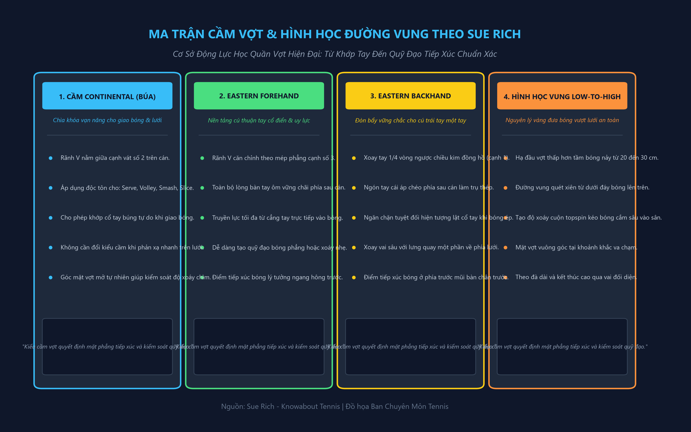
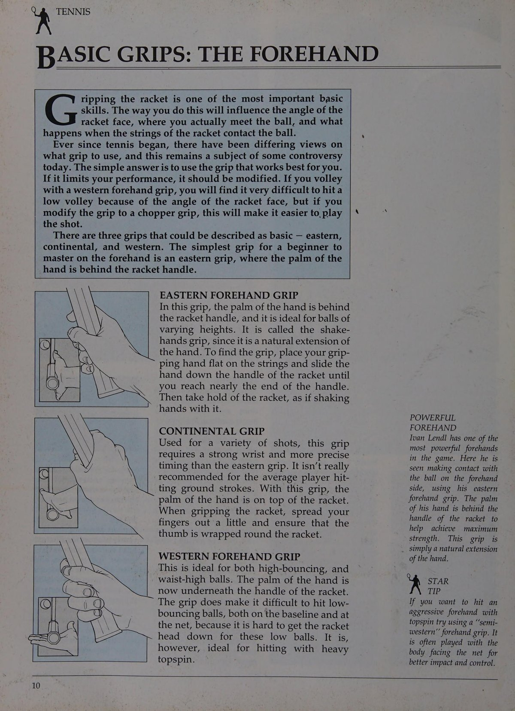
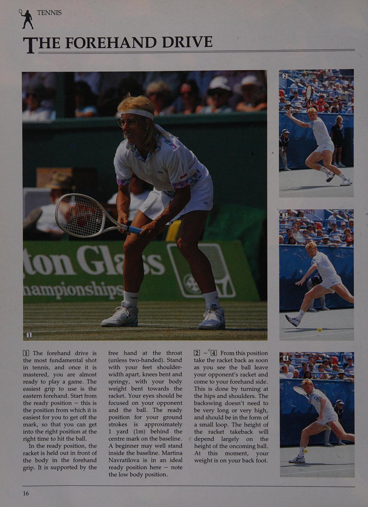
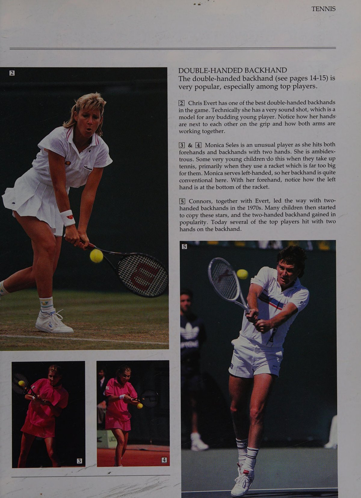
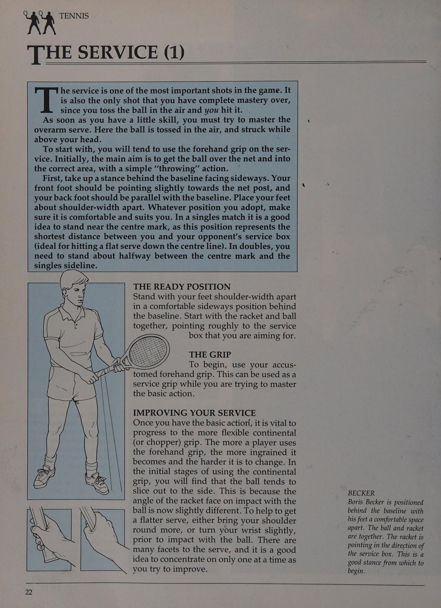
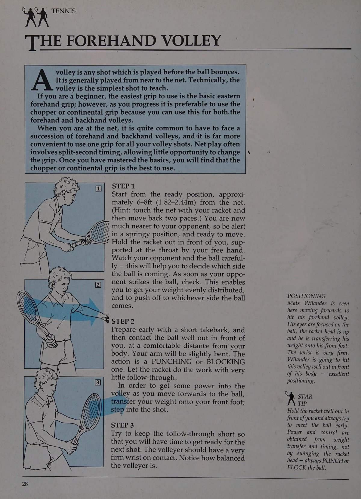
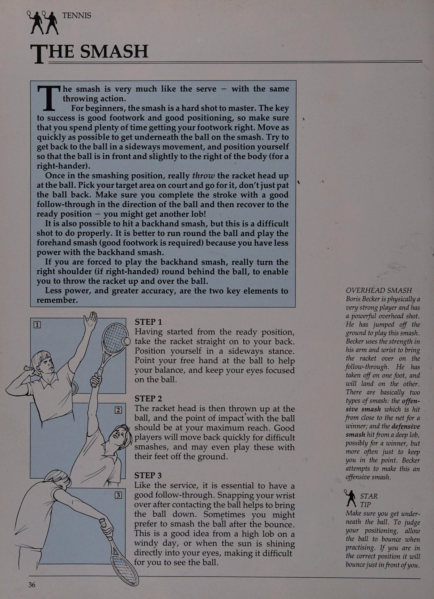
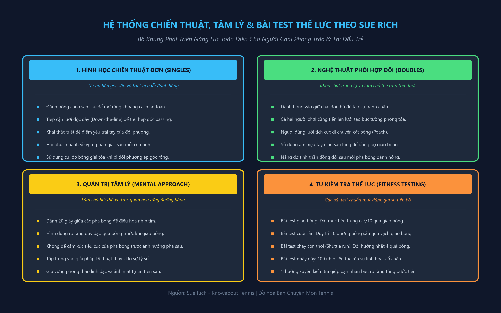

Nhập Môn Quần Vợt, Trang Bị Chuẩn Xác & Nghệ Thuật Các Cú Đánh Cuối Sân
Giới Thiệu Toàn Cảnh & Lựa Chọn Trang Thiết Bị
Quần vợt là một trò chơi đối kháng phức tạp dành cho hai người chơi (đánh đơn) hoặc bốn người chơi (đánh đôi). Đây là môn thể thao có thể được rèn luyện ở bất kỳ độ tuổi nào từ 4 đến 80 tuổi. Đối với các bạn nhỏ tuổi mới bắt đầu, chúng tôi đặc biệt khuyến khích việc tiếp cận thông qua hình thức "Short Tennis" — một phiên bản thu nhỏ với kích thước sân đấu ngắn hơn, lưới hạ thấp và quả bóng xốp mềm giảm áp lực nhằm giúp các em dễ dàng làm quen với nhịp điệu tiếp xúc bóng.
Cây Vợt Chuẩn Mực
Việc lựa chọn một cây vợt có trọng lượng và độ cân bằng phù hợp là yếu tố quyết định sự tiến bộ kỹ thuật. Cán vợt phải vừa vặn với kích thước bàn tay: khi bạn nắm cán vợt, ngón trỏ của bàn tay còn lại phải lọt vừa vặn vào khe hở giữa các đầu ngón tay và lòng bàn tay.
Giày & Trang Phục Thi Đấu
Đôi giày thi đấu phải có phần đế cao su đặc chống mài mòn, rãnh xương cá chống trượt và hai bên hông được gia cố vững chắc để bảo vệ cổ chân khi di chuyển ngang đột ngột.
Hệ Thống Cầm Vợt Căn Bản (Basic Grips)
Cán vợt quần vợt không phải là một hình tròn trơn nhẵn mà được chế tác thành hình bát giác với tám mặt vát riêng biệt. Cách bạn đặt bàn tay vào các mặt vát này sẽ quyết định góc mở của mặt vợt khi tiếp xúc với quả bóng.

1. Kiểu Cầm Continental (Cầm Vợt Kiểu Búa)
Để cầm kiểu Continental, bạn hãy tưởng tượng cây vợt là một chiếc búa và bạn dùng cạnh mỏng của khung vợt để đóng một chiếc đinh xuống mặt sân. Rãnh chữ V giữa ngón tay cái và ngón tay trỏ nằm thẳng hàng dọc theo cạnh vát trên cùng bên phải (cạnh số 2). Đây là kiểu cầm vợt vạn năng bắt buộc phải sử dụng cho cú giao bóng, các cú bắt volley trên lưới, cú đập smash và cú cắt bóng slice.
2. Kiểu Cầm Thuận Tay Eastern (Eastern Forehand)
Bạn hãy áp thẳng lòng bàn tay vào mặt lưới của cây vợt, sau đó trượt lòng bàn tay thẳng xuống cán vợt cho đến khi chạm vào đốc cán. Rãnh chữ V lúc này nằm dọc theo cạnh vát số 3. Kiểu cầm này mang lại sự trợ lực vững chắc tuyệt đối của toàn bộ lòng bàn tay phía sau cán vợt, rất phù hợp cho những cú đánh bóng phẳng hoặc xoáy nhẹ ở tầm ngang thắt lưng.
3. Kiểu Cầm Trái Tay Eastern (Eastern Backhand)
Từ kiểu cầm Continental, bạn xoay bàn tay khoảng một phần tư vòng ngược chiều kim đồng hồ sao cho rãnh chữ V nằm dọc theo cạnh vát trên cùng (cạnh số 1). Ngón tay cái nằm chéo áp sát mặt phẳng phía sau của cán vợt để đóng vai trò như một thanh trụ chống đỡ toàn bộ lực va đập khi đón bóng bằng mu bàn tay.
Các Cú Đánh Cuối Sân Nền Tảng (The Groundstrokes)
Cú Thuận Tay Cơ Bản (The Forehand Drive)
Chu trình thực hiện một cú thuận tay hoàn hảo bao gồm bốn giai đoạn liền mạch:
- Tư thế chuẩn bị (Ready Position): Đứng đối diện lưới, hai chân mở rộng bằng vai, gối chùng nhẹ, trọng tâm dồn lên mũi chân, hai tay giữ vợt trước ngực.
- Xoay vai sớm (Shoulder Turn): Ngay khi bóng rời vợt đối phương, xoay toàn bộ trục vai sang bên phải, kéo cây vợt ra sau theo một đường vòng cung mượt mà sao cho đầu vợt hạ thấp hơn quả bóng.
- Bước chân và tiếp xúc bóng (Step & Contact): Bước chân trái chéo về phía trước, vung vợt từ thấp lên cao và đón quả bóng ở vị trí ngang hông trước. Mặt vợt tại điểm chạm phải vuông góc hoàn toàn với mặt sân.
- Theo đà trọn vẹn (Follow-Through): Mặt vợt quét dài qua quả bóng và tiếp tục vươn cao qua vai trái đối diện, kết thúc động tác với khuỷu tay nâng ngang tầm mắt.
Cú Trái Tay Một Tay Và Hai Tay (The Backhand Drive)
Người chơi có thể lựa chọn cú trái tay một tay cổ điển hoặc cú trái tay hai tay hiện đại tùy thuộc vào thể trạng và cảm giác thoải mái của bản thân:
Trái Tay Một Tay (Single-Handed)
Mang lại tầm với rộng lớn và cảm giác bóng tinh tế. Đòi hỏi cơ bắp cẳng tay khỏe mạnh, ngón tay cái áp chéo sau cán vợt vững như đá và điểm tiếp xúc bóng phải diễn ra sớm ở phía trước mũi bàn chân trước.
Trái Tay Hai Tay (Double-Handed)
Rất lý tưởng cho trẻ em và người mới bắt đầu. Tay không thuận (tay trái) cầm kiểu Eastern thuận tay phía trên cán vợt, đóng vai trò như cánh tay trợ lực chính để đẩy bóng qua lưới với độ xoáy cuộn mạnh mẽ.




Nghệ Thuật Khởi Tạo Giao Bóng, Phản Xạ Trả Giao & Thống Trị Mặt Lưới
Kỹ Thuật Giao Bóng Toàn Diện (The Service)
Cú giao bóng chuẩn mực đòi hỏi sự phối hợp nhịp nhàng giữa chuyển động tung bóng của cánh tay trái và hành trình vung vợt hình cánh cung của cánh tay phải:
Cú Tung Bóng Đặt Chuẩn
Cầm quả bóng bằng các đầu ngón tay của bàn tay trái. Nâng toàn bộ cánh tay thẳng từ khớp vai lên cao một cách mềm mại. Thả bóng ở tầm ngang mắt để quán tính đưa bóng bay lên cao hơn tầm với tối đa của bạn khoảng một gang tay, hơi chếch về phía góc 1 giờ.
Vươn Cao & Búng Cổ Tay (Pronation)
Khi đầu vợt hạ sâu sau lưng trong tư thế "gãi lưng", đẩy mạnh hai chân bật lên không trung. Duỗi thẳng toàn bộ cánh tay chạm bóng ở điểm cao nhất có thể.
Kỹ Thuật Trả Giao Bóng (The Return of Serve)
Để trả giao bóng thành công trước những cú phát bóng có vận tốc trên 150 km/h, bạn không có đủ thời gian để vung vợt ra sau một cách thong thả như trong các pha bóng cuối sân:
- Nhún bật bước tách (The Split-Step): Đúng khoảnh khắc mặt vợt của đối phương tiếp xúc với quả bóng, hãy nhún bật nhẹ hai chân tại chỗ và tiếp đất bằng mũi chân để kích hoạt phản xạ lao sang hai bên.
- Rút ngắn biên độ mở vợt (Compact Backswing): Chỉ cần xoay vai sang ngang và đưa vợt ra sau một nửa quãng đường thông thường. Bạn hãy tận dụng chính tốc độ sẵn có của cú giao bóng đối phương để đẩy quả bóng trở lại.
- Mục tiêu trả bóng chiến lược: Trả bóng sâu vào giữa sân đối thủ để thu hẹp góc tấn công của họ, hoặc cắt bóng chìm sát chân nếu đối thủ có xu hướng giao bóng rồi lao nhanh lên lưới.
Kỹ Thuật Bắt Volley Trên Lưới & Các Biến Thể
Volley là cú đánh chặn bóng trực tiếp trên không trung trước khi bóng chạm đất trên phần sân của bạn. Vị trí lý tưởng trên lưới là cách mép lưới khoảng 2 đến 2,5 mét:
Volley Thuận Tay & Trái Tay
Sử dụng độc nhất một kiểu cầm Continental. Khóa cứng cổ tay ở góc 90 độ so với cẳng tay. Tuyệt đối không được vung vợt ra sau đầu!
Các Biến Thể Volley Nâng Cao
Bắt bóng nửa nảy (Half-Volley) khi bóng rơi ngay sát chân: chùng sâu gối và xúc bóng ngắn gọn ngay khi vừa nảy. Bắt volley thả nhỏ (Drop Volley) để triệt tiêu lực khi đối phương đứng xa.
Cú Đập Smash Dứt Điểm Trên Đầu (The Smash)
Cú smash là vũ khí tối thượng để dập tắt những quả bóng lốp bổng non nớt của đối phương. Ngay khi nhận diện được quả bóng bổng, lập tức xoay nghiêng thân người, giơ cánh tay trái chỉ thẳng lên trời để định vị quả bóng rơi, di chuyển lùi bằng các bước trượt chéo nghiêng người và bật nhảy đập bóng cắm mạnh mẽ sang phần sân trống của đối phương.


Nghệ Thuật Điều Khiển Độ Xoáy, Cú Cắt Slice & Vũ Khí Lốp Bóng Tinh Tế
Cơ Chế Tạo Xoáy Trên Các Cú Đánh Cuối Sân
Khả năng làm chủ các loại độ xoáy khác nhau là ranh giới phân định giữa một người chơi phong trào thông thường và một tay vợt có kỹ năng thi đấu nâng cao:
Xoáy Cuộn Lên (Topspin)
Vợt được hạ thấp hơn điểm rơi của bóng khoảng 20 đến 30 cm, sau đó vung xiên từ dưới đáy vuốt mạnh lên đỉnh quả bóng.
Cú Cắt Trái Tay (Slice Backhand)
Mặt vợt chém từ trên cao ngang vai xuống dưới đáy quả bóng theo một góc nghiêng khoảng 45 độ với khớp cổ tay được khóa chắc chắn.
Ứng Dụng Độ Xoáy Khi Giao Bóng (Spin on Serve)
Tùy thuộc vào vị trí tiếp xúc của mặt vợt lên bề mặt quả bóng tại thời điểm va chạm, bạn có thể tạo ra ba quỹ đạo giao bóng hoàn toàn khác biệt:
Giao Bóng Phẳng (Flat)
Mặt vợt đập thẳng vào tâm quả bóng. Vận tốc bóng bay nhanh nhất nhưng đòi hỏi chiều cao lý tưởng và độ chính xác tuyệt đối.
Giao Cắt Xoáy Ngang (Slice)
Mặt vợt chém vào má ngoài bên phải quả bóng (vị trí 3 giờ). Bóng bay vòng cung sang trái và nảy tạt góc rộng kéo đối thủ ra ngoài sân.
Giao Cắn Xoáy (Kick Serve)
Mặt vợt chải từ vị trí 7 giờ lên 1 giờ qua đỉnh bóng. Bóng cắm sâu qua lưới và nảy vọt dữ dội lên vai trái người đỡ giao bóng.
Nghệ Thuật Lốp Bóng & Cú Bỏ Nhỏ Tinh Tế
Cú lốp bóng (The Lob) và cú bỏ nhỏ (The Drop Shot) là hai thái cực chiến thuật bổ trợ hoàn hảo cho nhau trên sân đấu:
Cú Lốp Bóng (The Lob)
Có hai dạng lốp bóng chính:
- Lốp phòng thủ (Defensive Lob): Đưa bóng bay bổng cao chót vót để kéo dài thời gian chạy về giữa sân hồi phục vị trí.
- Lốp tấn công (Attacking Topspin Lob): Đánh bóng xoáy cuộn vượt qua tầm với của đối thủ khi họ đang đứng ôm lưới để bóng cắm thẳng xuống góc cuối sân.
Cú Bỏ Nhỏ (The Drop Shot)
Một cú chạm bóng mềm mại đầy bất ngờ làm bóng rơi sát mép lưới và nảy ngắn.
Chiến Thuật Sân Đấu Thông Minh, Quản Trị Tâm Lý & Hệ Thống Tự Kiểm Tra Năng Lực
Chiến Thuật Thi Đấu Đơn & Đánh Đôi Toàn Diện
Trận đấu quần vợt là một ván cờ vận động nơi mỗi đường bóng đánh đi đều phải phục vụ cho một ý đồ chiến thuật rõ ràng:

1. Chiến Thuật Đánh Đơn Thông Minh (Singles Strategy)
- Ưu tiên đường bóng chéo sân sâu: Đánh chéo sân mang lại khoảng cách bay dài nhất và bóng vượt qua phần lưới võng thấp nhất, giảm thiểu tối đa nguy cơ rúc lưới hoặc đánh bóng ra ngoài.
- Tiếp cận lưới dọc theo đường biên: Khi đối phương trả về bóng ngắn, hãy đánh quả bóng tiếp cận dọc dây (down the line) và tiến lên lưới theo đúng hướng bóng bay để khép góc passing shot của đối thủ.
- Kiên trì khoét sâu điểm yếu: Nếu đối thủ có cú trái tay lỏng lẻo, hãy liên tục điều bóng sâu vào góc trái tay để ép họ bộc lộ sai lầm.
2. Nghệ Thuật Phối Hợp Đánh Đôi (Doubles Coordination)
Trong thi đấu đôi, mục tiêu tối thượng là chiếm lĩnh mặt lưới và phong tỏa trung lộ:
- Đánh bóng vào giữa hai đối thủ (Down the middle): Khi cả hai đối phương đều đứng trên lưới, đánh bóng vào giữa sẽ triệt tiêu góc đánh trả hiểm hóc của họ và thường xuyên tạo ra sự tranh chấp xem ai là người đón bóng.
- Kỹ thuật cắt bóng bắt lưới (Poaching): Người đứng lưới chủ động quan sát nhịp trả giao bóng của đối thủ, nhanh chóng lao chéo người cắt bóng để thực hiện cú bắt volley kết liễu vào góc trống.
- Giao tiếp liên tục: Sử dụng các ám hiệu tay giấu sau lưng trước mỗi pha giao bóng và luôn động viên, khích lệ đồng đội sau những pha bóng đánh hỏng.
Quản Trị Tâm Lý Sân Đấu (The Mental Approach)
Quần vợt là một cuộc chiến nội tâm khốc liệt. Trong một trận đấu kéo dài hai giờ đồng hồ, thời gian quả bóng thực sự bay qua lại chỉ chiếm khoảng hai mươi phần trăm; tám mươi phần trăm thời gian còn lại là những khoảng lặng giữa các pha bóng:
Quy Tắc 20 Giây Hồi Tĩnh
Tận dụng trọn vẹn khoảng thời gian 20 giây giữa các pha bóng để hít thở sâu, hạ nhịp tim và gạt bỏ hoàn toàn cảm xúc tiêu cực của pha bóng vừa kết thúc.
Trực Quan Hóa Tích Cực (Visualization)
Trước khi thực hiện cú giao bóng hoặc trả giao bóng, hãy nhắm mắt trong một giây và hình dung rõ ràng quỹ đạo quả bóng bay vào điểm mong muốn.
Hệ Thống Tự Kiểm Tra Năng Lực (Testing Yourself)
Để theo dõi sự tiến bộ một cách khách quan, bạn hãy định kỳ thực hiện các bài kiểm tra kỹ năng và thể lực sau đây:
Bài Test Giao Bóng
Thực hiện 10 quả giao bóng vào ô bên phải và 10 quả vào ô bên trái. Đạt chuẩn khi có ít nhất 7/10 quả rơi trúng ô quy định với vận tốc ổn định.
Bài Test Bóng Bền Cuối Sân
Duy trì loạt bóng bền 10 quả liên tục cùng bạn tập sao cho toàn bộ các đường bóng đều rơi sâu qua vạch giao bóng mà không mắc lưới.
Bài Test Chạy Con Thoi
Chạy con thoi đổi hướng nhặt 4 quả bóng đặt tại 4 góc sân và đặt lại vào giữa sân trong thời gian dưới 20 giây để kiểm tra độ linh hoạt.